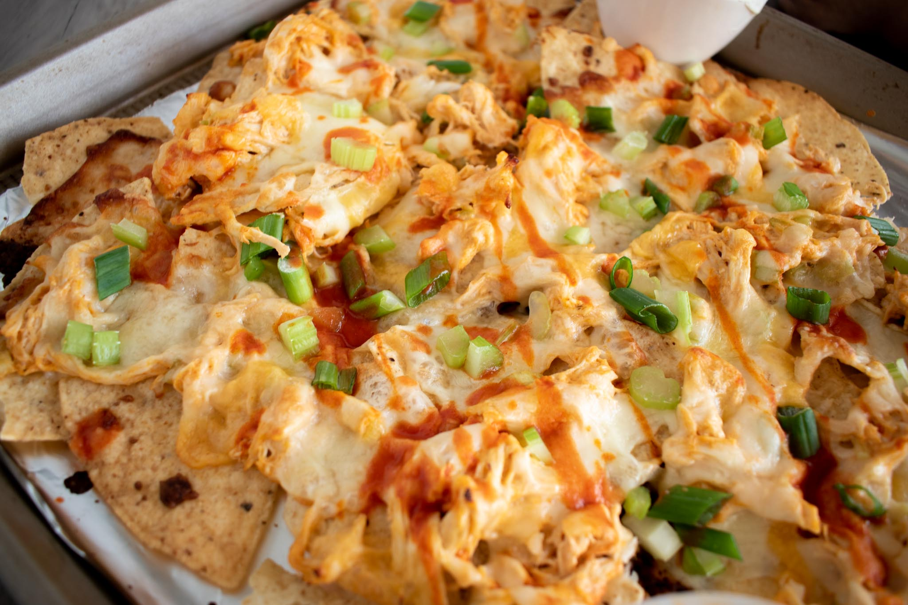

Buffalo Chicken Nachos

Description:
Add some flare to your next snack to accompany a couple beers and a football game. This dish satisfies our desires for spicy chicken wings, hearty nachos, and a salty crunch that keeps us around the table all afternoon long.
The Recipe:
It's quick and easy, so let's get right to it!
Ingredients:
Steps:
- Heat grill to 500 degrees (charcoal or kamado style gives you the best flavor).
- Season the chicken thighs.
- Grill chicken thighs for about 5 minutes on each side, pull them off the grill once they reach an internal temperature of 165 degrees (F).
- Cool your grill down to 400 degrees (F).
- Chop chicken to desired size and consistency.
- Create a bed of tortilla chips covering the entire cast iron skillet.
- Pour a light layer of buffalo sauce onto the chips.
- Spread chicken and celery evenly across the chips.
- Cover all of the ingredients in the skillet with a liberal layer of shredded cheese.
- Pour another light layer of buffalo sauce (and crema if you'd like) on top of the cheese.
- Put skillet onto the grill and let it cook until the cheese is completely melted.
- Enjoy!